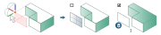
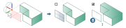

Move / copy
 | Move, rotate and copy individual or multiple entities. → |
Move, rotate single or several entities, and copy once or several times.

Select
Entities: Select Entities  . As soon as entities have been selected, the manipulator is set automatically to the position that is probably required (for example, in the middle of a hole, parallel to the current workplane or coplanar to the selected entities). The number of selected entities is displayed.
. As soon as entities have been selected, the manipulator is set automatically to the position that is probably required (for example, in the middle of a hole, parallel to the current workplane or coplanar to the selected entities). The number of selected entities is displayed.
The Copy  of entities can be enabled, together with the required number of copies. If Keep attributes has been selected, the copies are assigned the same graphical attributes and lie on the same layer as the base entities. If Keep attributes has not been selected, the attributes that are active for new entities will be used.
of entities can be enabled, together with the required number of copies. If Keep attributes has been selected, the copies are assigned the same graphical attributes and lie on the same layer as the base entities. If Keep attributes has not been selected, the attributes that are active for new entities will be used.
- Solids
For direct modeling, use the Side faces option
 to determine whether to fill an existing gap with new faces. Otherwise, the existing faces will be adjusted.
to determine whether to fill an existing gap with new faces. Otherwise, the existing faces will be adjusted.

- Solids
Select the Inside solid option
 to determine whether the copy of a modified face still belongs to the solid.
to determine whether the copy of a modified face still belongs to the solid.
Motion
You can also use the manipulator to move and rotate entities. When the handles of the manipulator are moved in the graphics area, the values in the dialog are updated. If an arc or an axis is clicked, the cursor jumps to the associated input.
Start: Select start point  .
.
End: Select end point  .
.
Reference: Relate the specifications for the linear translation in the X, Y and Z direction to another point. Select a point.
Delta: Enter or check the linear translation in the X, Y and Z direction  .
.
Angle: Enter or check the rotation around the X, Y and Z axis  .
.
Automatic: Disable automatic positioning of the manipulator. The manipulator is positioned at the origin of the current workplane.
Align start X axis
The X axis of the manipulator can be aligned under Direction. Initially, the manipulator is aligned in the direction of the X axis of the current workplane  .
.
To change the start direction of the X axis, select a different direction  . The click position on a line affects the orientation of the manipulator.
. The click position on a line affects the orientation of the manipulator.
Select  the direction by using an entity, specify it by using 2 points
the direction by using an entity, specify it by using 2 points  or selecting an axis direction of the current workplane (X Wp, Y Wp, Z Wp)
or selecting an axis direction of the current workplane (X Wp, Y Wp, Z Wp)  or enter the direction with a Vector
or enter the direction with a Vector  . The Invert
. The Invert  option inverts the direction.
option inverts the direction.

Align end X axis
To change the end direction of the X axis, select a different direction  .
.
The X axis of the manipulator can be aligned under Direction.
Select the direction by using an entity, specify it by using 2 points or selecting an axis direction of the current workplane (X Wp, Y Wp, Z Wp) or enter the direction with a Vector . The Invert option inverts the direction.